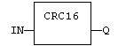
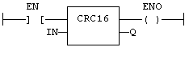

Function
Calculates a CRC16 on the characters of a string.
|
Name |
Type |
Description |
|
IN |
STRING |
character string. |
|
Name |
Type |
Description |
|
Q |
INT |
CRC16 calculated on all the characters of the string. |
In LD language, the input rung (EN) enables the operation, and the output rung keeps the same value as the input rung. In IL language, the input parameter (IN) must be loaded in the current result before calling the function.
The function calculates a MODBUS CRC16, initialized at 16#FFFF value.
Q := CRC16 (IN);

The function is executed only if EN is TRUE.
ENO is equal to EN.
